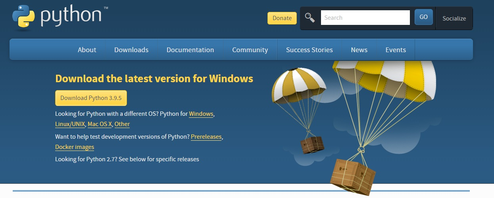
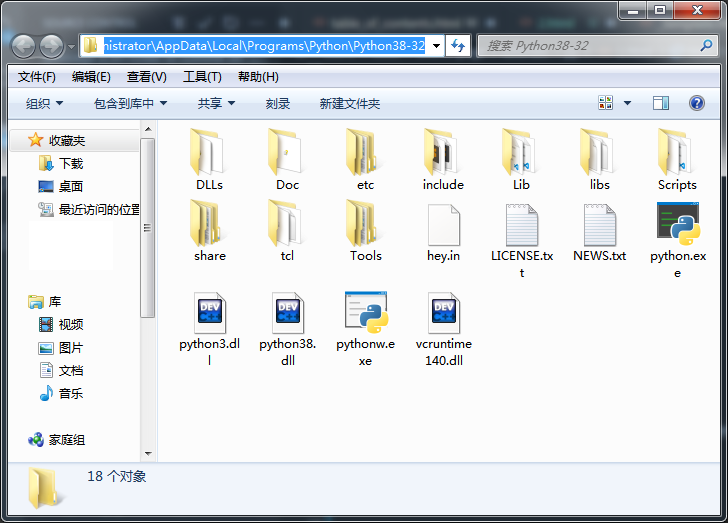
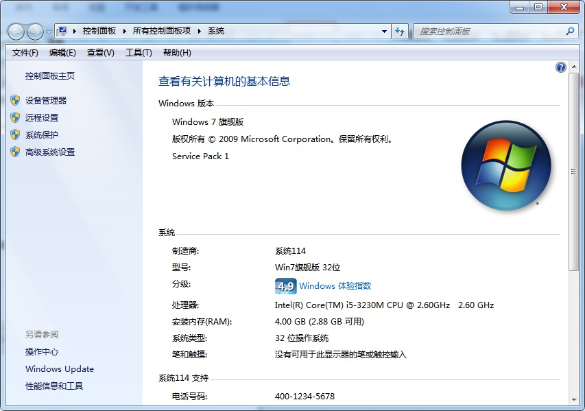
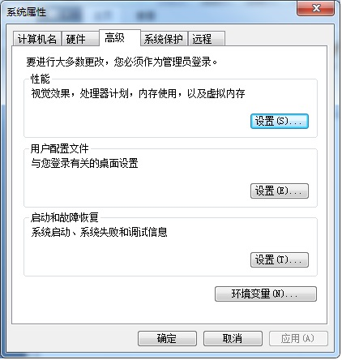

1.1 下载并安装python
编写程序的第一步，就是配置一个环境。如果想要使用Python，那么你就必须下载一个Python的解释器。
在
Python官网下载Python。最新版的Python应该是Python 3.9, 但是在本教程中，我会使用Python 3.8来运行代码示例。 点击
这里访问Python的下载页面。

{kind=link}
1.2 配置环境变量
在下载Python安装包之后，使用默认配置安装Python。安装完之后，你应当能够在开始菜单中找到名为"Python 3.8"的文件夹。点开该文件夹，右键单击其中的一个文件。点击"打开文件位置"。此时，您将会被引导到安装了python的文件夹中。

点击页面上方的地址栏，Ctrl+C复制地址栏内文字。
之后，点开计算机，右键单击"计算机"。点击属性。您将看到以下界面：

点击“高级系统设置”。看到以下界面以后，再点击下方的“环境变量 (Path Variables)”。

你将看到如下界面。在下方的框中下滑，你将会看到名为PATH的条目。双击该条目后半部分，并把刚才复制的路径添加进去。注意在末尾加上英文的分号。

用同样的方式，把Python文件夹中的Scripts文件夹加入到环境变量中。
{kind=link}
{kind=link}
{kind=link}
在添加环境路径时，必须在末尾加上英文的分号(;)，否则在继续加入环境路径时，系统会认为接下来添加的环境路径是之前的环境路径的一部分，从而导致错误。
1.3 测试Python是否安装好了
打开CMD。（或你的操作系统的对应软件；在MacOS中一般称为Terminal，在Linux系统中常称为Bash。）输入py或者python。如果现实类似下面的文字，说明您的电脑上已经安装了Python。
Python 3.8.5 (tags/v3.8.5:580fbb0, Jul 20 2020, 15:43:08) [MSC v.1926 32 bit (Intel)] on win32
Type "help", "copyright", "credits" or "license" for more information.
>>>
1.4 pip简介
pip是Python的包管理器 (Package Manager)。利用pip，我们可以从pypi (Python Package Index)
pypi.org 上获得各种各样的包。这些包都是其他程序员编写的，有些能够有效地节省我们编程时所使用的时间，精力。
现在，我们来试着利用pip来安装ipython (ipython.org) ，一个在数据分析等领域被广泛使用的解释器。
打开cmd并键入以下文字。
Downloading ipython-7.24.1-py3-none-any.whl (785 kB)
Python 3.8.5 (tags/v3.8.5:580fbb0, Jul 20 2020, 15:43:08) [MSC v.1926 32 bit (Intel)]
Type 'copyright', 'credits' or 'license' for more information
IPython 7.24.1 -- An enhanced Interactive Python. Type '?' for help.
In [1]:
常见问题
我得到类似下面的提示：
很有可能是你没有将Scripts文件夹添加到你的环境路径中。你可以回到1.2节看如何把Scripts加入到PATH中。